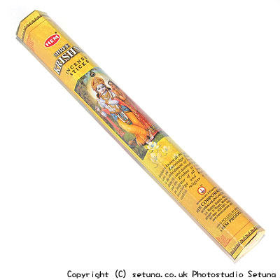

そのまま嗅ぐとフツーに「インド香」って感じの匂いです。
オレンジっぽいような匂いとサンダルが少し香ります。
火を点けるとまずはサンダル系が香り始め、アロエベラやアーモンドのような甘めの可愛い香りが流れ出します。
全体的に広がるのはサンダルですが、追いかける様にアーモンドが薄く香り部屋中に広がり続けます。
少し軽めで甘く、いい気分になれる香り・・・とでも云えば良いと思います。
パッケージの通りクリシュナ神が笛を吹いている様に軽やかに香ります。
神様達のくすくすと笑う声すら聞こえてきそうです。
焚き終わりまで同じいい香りが続き、白檀とアーモンドが一緒になった香りがしばらくの間続きます。
何だか楽しい気分になってくる感じのいい香りのお香です。
